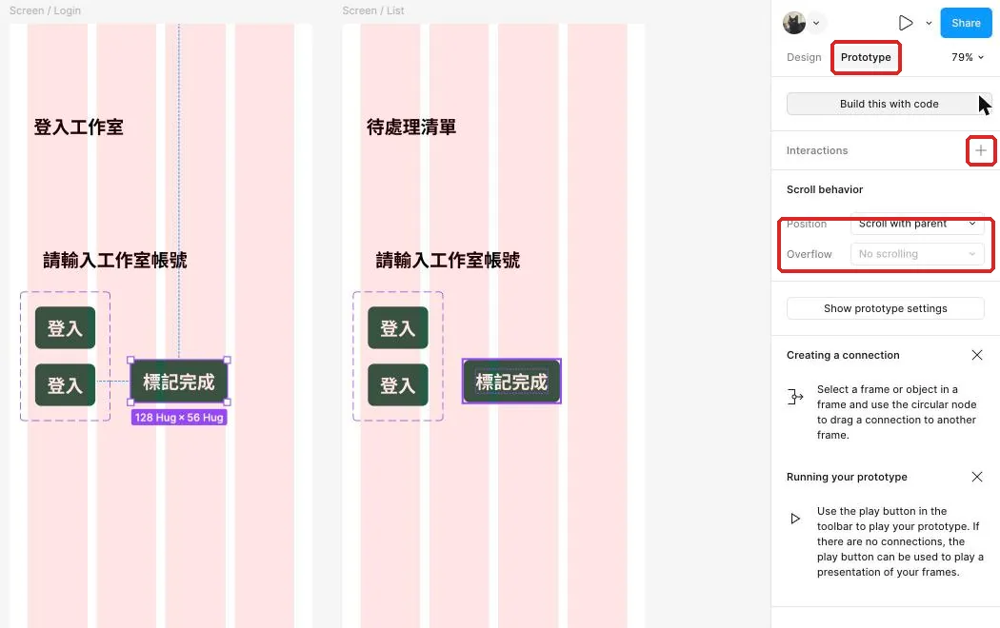
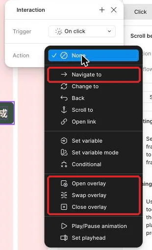
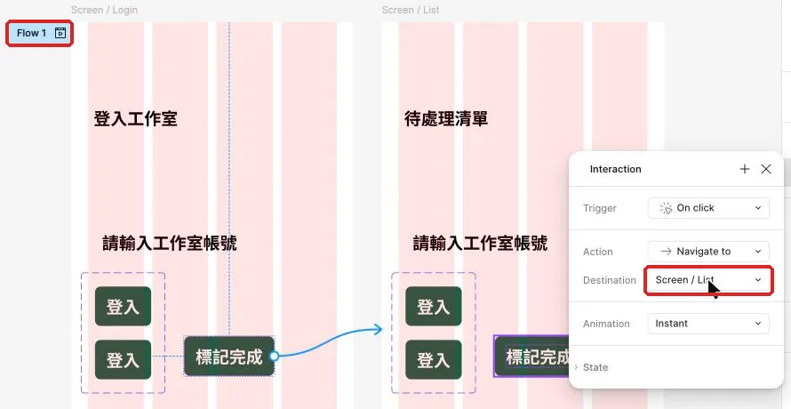
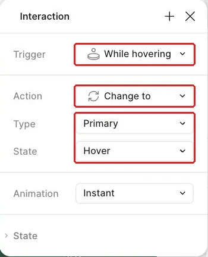

連好登入、清單、詳情與返回
工作室行政人員要從登入找到正確任務，查看內容後回到清單，按鈕也要在滑過與按下時給出符合裝置的回應。
從流程地圖變成真的點擊
工作室行政人員已經有登入、待處理清單與任務詳情，也有一張說明「完成一筆任務」的流程地圖。現在要把地圖變成可操作流程：按下登入看到清單，點「整理交付包」看到它的內容，返回後再打開「確認活動報名資料並補上聯絡電話」，兩筆資料要各自正確。
這一頁會沿用上次完成的需求摘要、畫面清單、線框與「完成一筆任務」流程起點。先開啟本堂起始材料，確認正式畫面與圖層名稱；完成連線後，再用本堂完成檢查表從登入完整走一次。沒有上次成果時，先回到需求、流程圖與線框依規格表補做，約需二十到三十分鐘。兩個素材連結都服務同一個目標：前者讓你知道有哪些畫面可用，後者讓你確認實際點擊結果。
先在同一頁找出登入按鈕、清單中的任務列、兩張內容不同的詳情與返回動作。流程圖仍留在旁邊當地圖，真正互動則會綁在正式物件上。完成後，你應能只靠 Preview 操作，不必回到編輯畫布指路。
每條互動都要說清楚何時、做什麼、去哪裡
這一節要建立原型互動的基本讀法。Trigger（觸發）回答「什麼時候發生」，Action（動作）回答「要做什麼」，Destination（目的地）回答「要去哪一張畫面」。只要其中一項選錯，畫布上的連線看起來再完整，預覽結果仍會偏離任務。
例如，點「整理交付包」這一列時，觸發是 On click，動作是 Navigate to，目的地是顯示整理交付包內容的詳情。若把目的地選成第二筆的詳情，按鈕仍有反應，卻顯示錯誤資料；這種錯誤比完全沒反應更需要逐項核對，因為使用者會以為自己點錯了任務。
| 要問的問題 | 本頁設定 | 預覽時怎麼判斷 |
|---|---|---|
| 何時發生 | On click | 點擊熱區後才切換 |
| 發生什麼 | Navigate to | 原畫面換成另一張完整畫面 |
| 去哪裡 | 指定的最外層 Frame | 標題、期限與說明都符合所點的任務 |
| 正式起點 | Screen / Login | Preview 第一張是登入畫面 |
| 登入流程 | Screen / Login → Screen / List | 按下登入後看到待處理清單 |
| 如何返回 | Navigate to 清單 | 即使從詳情開始預覽，也能回清單 |
裝置設為手機時，On click 可能顯示成 On tap，兩者在這裡代表相同的點擊觸發。介面名稱以你看到的畫面為準。這堂每個熱區只放一個動作，因此 Starter 方案就能完成；同一個觸發疊多個動作、條件判斷或變數，才屬於付費方案開放的範圍。
返回動作有兩種常見選擇。Back 依瀏覽紀錄回到上一張畫面，從中間畫面直接開始預覽時可能沒有可用紀錄；Navigate to 則直接指定清單，結果更穩定。本頁的任務要求是「回到待處理清單」，所以用 Navigate to 指定清單，讓測試起點不同時也能得到相同結果。
熱區的範圍也會影響操作。若只把連線綁在按鈕文字，使用者點到按鈕邊緣時沒有反應；若把連線綁在完整按鈕外框或整列任務，視覺上看起來可點的區域就會真的可點。判斷原則很簡單：看到多大的互動區，實際上就應有多大的點擊範圍。
示範：先連通登入、第一筆詳情與返回
這一節先完成一條最短可測路徑。數值與名稱集中在規格表，操作時依內容核對畫面，不依畫布位置猜目的地。
| 類別 | 圖層或設定 | 本堂值 |
|---|---|---|
| 登入熱區 | Button / Login（登入按鈕） | 完整按鈕外框 |
| 登入目的地 | Screen / List（待處理清單） | 十二筆主線任務 |
| 第一筆熱區 | Row / T01（整理交付包任務列） | 完整任務列 |
| 第一筆目的地 | Screen / Detail（整理交付包詳情） | 標題、說明、期限與完成按鈕 |
| 返回熱區 | Button / Back（返回清單按鈕） | 44 × 44；沿用 Top Bar 左側的返回圖示鈕 |
| Trigger | On click | 手機裝置可能顯示 On tap |
| Action | Navigate to | 一個熱區一個動作 |
| Animation | Instant | 本頁先核對目的地 |
| Flow | 完成一筆任務 | 正式起點為 Screen / Login |
- 在 Layers 展開正式登入畫面，選取
Button / Login（登入按鈕）外框。做完會看到整個按鈕被選取，而非只有文字游標。 - 切到右側 Prototype 分頁，將按鈕旁的連線節點拖到待處理清單最外層 Frame。做完會出現一條由登入按鈕通往清單的連線。

- 打開 Interaction details，將 Trigger 設為 On click。做完會看見這條互動由點擊啟動。
- 將 Action 設為 Navigate to，並確認 Destination 是
Screen / List。做完會在設定中看到清單的唯一名稱。


- 將 Animation 保持 Instant。做完後，這條連線只檢查操作與目的地，不混入轉場判斷。
- 從
Screen / Login開啟「完成一筆任務」的 Preview，按下登入。做完會依Screen / Login→Screen / List的流程，從帳號、密碼畫面切到十二筆待處理任務。 - 回到編輯畫布，選取
Row / T01（整理交付包任務列）外框。做完會看到整列標題、期限與進入詳情線索一起被選取。 - 將這一列連到
Screen / Detail，使用相同的觸發與動作。做完會看到目的地詳情顯示「整理交付包」。 - 在詳情畫面的
Top Bar選取既有的Button / Back（返回清單按鈕）。做完會選到四十四像素見方的完整熱區。 - 將返回按鈕設定為 On click、Navigate to、目的地為待處理清單。做完後，即使從詳情直接開始 Preview，也能回到清單。
- 從登入重新預覽，依序點登入、整理交付包與返回清單。做完會回到原本的十二筆任務，而詳情內容與所點任務一致。
示範最後要核對內容，而非只看畫面有沒有切換。進入詳情後，應看見「整理交付包」、說明「核對檔名與尺寸，把畫面圖、規格與測試紀錄放進同一個資料夾。」與期限「今天18:00」。返回後，清單仍保留其餘十一筆任務，這才是完整的一來一回。
跟著做：讓第二筆任務有自己的詳情
現在把提示減少，自己完成第二條任務路徑。這一步要練的是「同樣的互動設定，目的地隨內容改變」，避免每一列都通往同一張詳情。
- 在待處理清單找到「確認活動報名資料並補上聯絡電話」的完整任務列，確認它有獨立圖層。
- 複製
Screen / Detail，命名為Screen / Detail T02（確認活動報名資料詳情）。完成後會得到保留相同結構的第二筆詳情畫面。 - 把副本內容改成「確認活動報名資料並補上聯絡電話」、說明「逐筆核對報名資料，補齊缺少的聯絡電話後再確認名單。」與期限「明天12:00」。完成後，第二筆詳情會顯示自己的資料。
- 為第二筆任務列設定點擊後前往
Screen / Detail T02。完成後，預覽時會看到與整理交付包不同的標題。 - 將副本中既有的
Button / Back設定為返回待處理清單。完成後，兩張詳情都能回到相同的清單。 - 從登入重啟 Preview，依序走「登入 → 整理交付包 → 返回 → 確認活動報名資料並補上聯絡電話 → 返回」。每一步都用畫面標題與期限確認內容。
- 點擊每個按鈕與任務列的邊緣。完成後，視覺熱區與實際熱區的範圍應一致。
- 找到登入空白狀態中的停用按鈕，查看是否意外帶著互動。停用外觀本身不會自動阻止 Navigate，因此這個使用處應保持沒有切頁行為。
完成兩筆後，你會有四種可觀察結果：登入到清單、第一筆到第一筆詳情、第二筆到第二筆詳情、兩張詳情都回到清單。每一個結果都能用內容說明，代表連線不是只靠 Frame 的相對位置完成。
接著做一次有目的的故障練習。先記下「整理交付包」目前的正確目的地，再把它故意改成第二筆詳情。從登入開始預覽，點第一筆時會看到「確認活動報名資料並補上聯絡電話」的內容。按照「熱區對嗎 → 觸發對嗎 → 動作對嗎 → 目的地對嗎 → 起點對嗎」逐項檢查，找到目的地錯誤後改回整理交付包詳情，再從登入重跑完整路徑。這次練習的重點是看見「有切頁也可能連錯」，並建立固定排查順序。
題目關鍵畫面：一題完整示範，兩題自己決定
基本連線會讓畫面切換，題目關鍵畫面則要把店家的抱怨轉成可操作的規則。預約題提供完整規格與步驟；點餐題和會員題只提供設計問題與合格標準，讓你自行比較做法並作決定。實作時完成自己選定的題目。
完整示範：預約題的選擇時段
店主說：「大型犬其實會佔掉好幾個時段。」因此，額滿與服務時間不夠都要在飼主選擇前顯示。以下示範日期是 11/10（星期二）；大型犬全套洗澡美容需要連續三小時，單一時段顯示可選仍不足以完成這筆預約。
| 類別 | 圖層或資料 | 本次規格 |
|---|---|---|
| 關鍵畫面 | Screen / Select Slot（選擇時段） | 上方日期列；下方時段格 |
| 日期列 | Date Rail（日期列） | 一排 7 天；超出畫面的部分先保留，做長清單時再加入捲動 |
| 額滿示範資料 | 11/10（星期二） | 11:00、15:00 已額滿；示範資料設定為那兩個時段店裡的美容師都已排滿 |
| 時段元件 | Slot（時段卡） | 10:00～18:00；每小時一格 |
| 示範打烊時間 | 19:00 | 需求頁未說幾點打烊，本次先採用的假設 |
| 狀態屬性 | State | Available／Selected／Full／Unavailable |
| 額滿外觀 | Full | 灰底並顯示「額滿」；移除點擊互動 |
| 時間不足外觀 | Unavailable | 顯示「時間不夠」；移除點擊互動 |
| 大型犬可選起點 | 12:00、16:00 | 後面連續三格都空，並在 19:00 前結束 |
| 大型犬不可選起點 | 10:00、13:00、14:00、17:00、18:00 | 會碰到額滿時段，或服務結束時間超過 19:00 |
| 長服務範例 | 大型犬全套洗澡美容 | 180 分鐘；選 12:00 後顯示「12:00～15:00，共 3 小時」 |
| 後續紀錄 | Screen / My Bookings（我的預約） | 起始資料來自 BOOKING-MINE.csv 的 3 筆預約 |
需求頁只說早上十點開始、最後一個時段是下午六點，沒有說幾點打烊。這次示範先假設 19:00 打烊；實際案子要問店主，先寫進需求初稿「還沒想清楚的」。
- 開啟
BOOKING-DATA.csv，找到大型犬全套洗澡美容的 duration。做完會確認這項服務需要 180 分鐘，時段判斷要看連續空格。 - 建立
Screen / Select Slot（選擇時段），先排一列 7 天的日期鈕，再排時段格。做完會同時看見日期與當日時間；超出畫面的日期先保留，做長清單時再加入捲動。 - 將一張時段卡做成
Slot（時段卡）元件，加入 State 的四個 Variant。做完會有可選、已選、額滿與時間不夠四種外觀。 - 依規格表設定 11/10 的 Full 與 Unavailable 時段。做完後，額滿與時間不足會用不同文字出現在選擇前；11:00 與 15:00 額滿的原因都是那兩個時段店裡的美容師都已排滿。
- 複製一張 11/10 從 12:00 開始的已選畫面，依序將三個連續時段設為 Selected。做完後，下方會顯示「12:00～15:00，共 3 小時」，服務在 15:00 結束，不會佔用 15:00 那格。
- 開啟
BOOKING-MINE.csv，依三筆資料排出我的預約清單。做完會得到後續流程的起始紀錄，稍後可用來核對新送出的預約是否加入。
你的題目若是預約，這段示範可以照做；但「改時間」「沒到店」等需求頁裡的其他問題，要自己設計（評分表 N4）。
點餐題：讓數量、徽章、總計與售完狀態一致
設計問題：顧客加入第二杯時，怎麼知道訂單裡現在有幾杯、總共多少錢？售完的品項要在什麼時候讓人知道？
合格標準：數量最少為 1，減到 1 時減號停用；徽章數字等於訂單總數量；總計等於各品項單價乘以數量的和；售完狀態在加入前就看得出來，加入按鈕保持停用。
先畫兩種做法的草圖再選一種，把沒選的那種與理由寫進評分表的設計取捨（N5）。
會員題：讓點數餘額、兌換條件與紀錄一致
設計問題：會員在兌換前，怎麼知道自己點數夠不夠、差多少？兌換後去哪裡確認扣了多少？
合格標準：首頁看得到目前點數；點數不足的兌換品在兌換前顯示差多少，兌換按鈕保持停用；點數紀錄的增減與餘額連續正確，最後餘額和首頁一致。紀錄資料使用 MEMBER-POINTS.csv。
先畫兩種做法的草圖再選一種，把沒選的那種與理由寫進評分表的設計取捨（N5）。
讓按鈕自己回應滑過與按下
基本路徑連通後，這一節把元件狀態變成真正的互動。桌面游標滑過按鈕時顯示 Hover，能提醒這裡可以點；滑鼠或手指按住時顯示 Pressed，能讓使用者知道系統已接到動作。互動設定在主元件的 Variant 上，所有使用處會一起得到回應。
| 起始 Variant | Trigger | Action | 目標 Variant | 預覽時看到的結果 |
|---|---|---|---|---|
| Default | While hovering | Change to | Hover | 游標移上按鈕時外觀改變 |
| Default | While pressing | Change to | Pressed | 按住時顯示按下狀態 |
While hovering 與 While pressing 結束後會自動回到原本的 Variant，不需要另設 Mouse leave 或 Mouse up 返回互動。
- 到元件區選取主要按鈕的 Default Variant。完成後紫色元件集裡只有一般狀態被選取。
- 切到 Prototype 分頁，在 Interactions 點 ＋。完成後會開啟 Trigger 與 Action 設定。
- 將 Trigger 設為 While hovering。完成後這條互動會等待游標停在按鈕上。
- 將 Action 設為 Change to。完成後下方會出現目標 Variant 的屬性下拉。

- 在屬性下拉選 Hover。完成後 Default 會以元件內部連線指向 Hover。
- 回到 Default Variant 再新增一條 Interaction。完成後同一個起始狀態會有第二種觸發。
- 將第二條 Trigger 設為 While pressing，Action 設為 Change to，目標選 Pressed。完成後按住主要按鈕時會進入 Pressed。
- 開啟 Preview，把游標移上登入按鈕。完成後所有使用這個主元件的桌面按鈕都會顯示 Hover。
- 按住登入按鈕再放開。完成後會短暫看見 Pressed，放開後依原本 On click 連線前往清單。
手機上沒有 Hover，因為手指沒有「停在按鈕上但尚未按下」的狀態；Pressed 才是手指碰到畫面時的重要回饋。因此 Hover 服務滑鼠操作，Pressed 同時服務滑鼠與觸控。設計手機原型時仍可保留 Hover Variant，方便同一套元件在桌面版使用，但判斷手機是否好用要以 Pressed 為主。
Change to 只在同一個元件集的 Variant 之間切換。它改變的是按鈕外觀，Navigate to 則負責前往另一張完整畫面。先確認 Hover 與 Pressed 的狀態互動，再確認按下後的頁面目的地，兩層各自核對會比較容易找到問題。
測試時先放慢動作觀察三個時刻。游標尚未進入按鈕時應看見 Default；移入但尚未按下時應看見 Hover；按住時才出現 Pressed。若快速點一下直接換頁，很容易錯過中間狀態，因此可以先在一個尚未連頁的按鈕使用處檢查外觀，再回到正式登入按鈕確認狀態與導覽能接續發生。
同一套主元件可能出現在登入、詳情與彈窗。把互動設在 Variant 的好處，是修正一次就能讓所有使用處保持一致；各使用處仍可保留自己的 Label 與頁面目的地。這種分工讓「按鈕怎麼回應」由元件負責，「按下後去哪裡」由所在畫面負責，後續增加流程時不會把兩種設定混在一起。
讓表單在原型裡動起來
按鈕狀態完成後，表單裡的勾選、單選與開關也要能回應點擊。單選是一組選項共用一個狀態，所以狀態要放在群組上。勾選框與開關則保留單一元件切換自己的狀態。Figma 原型不能真的輸入文字，因此文字欄改用空白與已填兩張畫面模擬；使用者點欄位後，原型前往填好範例內容的畫面。
這段從 Screen / New Task（空白新增任務畫面）開始。模擬填寫使用 Screen / New Task → Screen / New Task Filled，提醒開關使用 Screen / New Task Filled → Screen / New Task Reminder。
| 表單項目 | 起始狀態 | 互動 | 預覽結果 |
|---|---|---|---|
Checkbox（勾選框） | Checked false | On click → Change to → Checked true | 方框出現勾選 |
Radio Group（單選群組） | Selected = 高／中／低 | 三個選項各用 On click → Change to → 對應 Variant | 點任一選項時只保留該項已選 |
Toggle（開關） | On false | On click → Change to → On true | 底色與圓鈕位置改變 |
| 文字欄 | Screen / New Task | On click → Navigate to → Screen / New Task Filled | 欄位 Value 顯示範例內容 |
| 條件欄位 | Screen / New Task Filled 的 Hotspot / Reminder | On click → Navigate to → Screen / New Task Reminder | 多出提醒時間欄位 |
| 畫面切換 | 模擬填寫 | Animation = Instant | 內容立即換成已填狀態 |
- 選取 Checkbox 元件的 Checked false Variant，在 Prototype 新增 On click。做完會出現一條等待點擊的互動。
- 將 Action 設為 Change to，目標選 Checked true。做完後，所有勾選框使用處都能由空框切到勾選。
- 在 Checked true Variant 加入反向的 On click，目標選 Checked false。做完後，再點一次會回到未勾選。
- 將高、中、低三個 Radio 選項包進同一個 Frame，做成元件並命名為
Radio Group（單選群組）。做完會得到一個管理整組選項的元件。 - 為
Radio Group建立三個 Variant，將屬性設為 Selected = 高、中、低。做完後，每個 Variant 只有對應的選項呈現已選，其他兩個維持未選。 - 在每個 Variant 裡，分別為高、中、低三個選項加入 On click。將 Action 設為 Change to，目標依序選對應的 Selected Variant。做完後，三個 Variant 各有三條群組切換互動。
- 回到
Screen / New Task，把原本高、中、低三個 Radio 使用處換成一個Radio Group使用處。做完後，新增任務畫面的三個單選會由同一個群組管理。 - 自己題目裡的單選也照同樣做法另建群組，例如預約題的寵物體型或點餐題的付款方式。選項文字可以綁成 Text property，也可以直接改各 Variant 的文字。
- 開啟 Preview，依序點高、中、低。做完後，每次只會保留最後點選的項目，前一個選項會自動取消。
- 連接 Toggle 的 On false／true，並在兩個 Variant 之間加入反向的 On click。做完後，開關能在 Preview 切換自己的狀態。
- 複製
Screen / New Task，將欄位 Value 改成範例內容，命名為Screen / New Task Filled（已填新增任務畫面）。做完會有版面相同、內容已填好的第二張畫面。 - 在
Screen / New Task的文字欄加入 On click，使用 Navigate to 前往Screen / New Task Filled。做完後，點欄位會立刻顯示範例內容。 - 將 Animation 設為 Instant。做完後，畫面不會出現容易被誤認成換頁的轉場。
- 複製
Screen / New Task Filled，命名為Screen / New Task Reminder，再加入提醒時間欄位。做完會有開關打開後的完整表單狀態。 - 在
Screen / New Task Filled的開關列上方放一個透明熱區 Frame，Fill 設為 0%，命名為Hotspot / Reminder。把熱區放在最上層，設定 On click → Navigate to →Screen / New Task Reminder；開關元件自己的 Change to 保留。點下去會先觸發熱區的換頁。 - 開啟 Preview，依序測試勾選、單選、開關與文字欄。做完後，每次點擊都會產生可觀察的狀態改變，
Screen / New Task Filled也能前往Screen / New Task Reminder。
看兩組按鈕互動，找出狀態對應正確的一組
版本一把 Default 的 While hovering 設成 Change to Hover，把 While pressing 設成 Change to Pressed；清單每一列仍以 On click 前往內容相符的詳情，返回則 Navigate to 清單。版本二也會變色，但 While hovering 指向 Pressed，While pressing 指向 Hover；第一筆清單仍正確，第二筆卻連到第一筆詳情。
請先判斷哪一版較好，再分別從「游標滑過」「按住」「第二筆目的地」三個結果說明。錯誤版本看起來仍有反應，問題在於反應代表的意思與內容對不上。
看完自己的判斷再展開
版本一較好。滑過時顯示 Hover、按住時顯示 Pressed，符合桌面與觸控的操作時機；兩筆清單也各自前往正確詳情。版本二雖然會變色，卻把狀態意義顛倒，第二筆還顯示錯誤內容，使用者會收到互相矛盾的回饋。
卡住時，照固定順序排查
這一節把 Preview 的現象對回原型設定。先選發生問題的熱區，再由觸發、動作、目的地與起點一路往下檢查，能避免一次改動多項後失去判斷依據。
| 看到的現象 | 通常的原因 | 怎麼修 |
|---|---|---|
| 拖曳時跳出一個輸入框 | 拖到物件旁的星形圖示，那是對話輸入，不是連線圓點 | 按 Esc 關掉，改從 Prototype 分頁 Interactions 的 ＋ 建立互動 |
| 只有文字中央可點 | 互動綁在 Label | 把 Interaction 移到完整 Button 或 Row 外框 |
| 點第一筆卻看到第二筆內容 | 任務列連到錯誤詳情 | 用中文標題核對 Destination，再改回整理交付包詳情 |
| 從詳情開始時返回沒反應 | 返回依賴 Back 的瀏覽紀錄 | 改用 Navigate to 指定待處理清單 |
| 游標滑過卻顯示按下色 | While hovering 指到 Pressed | 將 Change to 的目標改為 Hover |
| 按住按鈕看不到回饋 | Default 缺少 While pressing | 新增互動並把目標設為 Pressed |
| Hover 沒反應 | 互動加在使用處而不是主元件的 Variant 上 | 回到 Components 區的 Default Variant 加 While hovering |
換你做：你的題目
從你的畫面清單挑出這次對應的畫面，完成題目關鍵設計，再把清單、詳情與返回連成可來回操作的路徑。
三個題目的提示問題：
| 預約 | 點餐 | 會員 |
|---|---|---|
| 飼主從哪張清單進入服務詳情？選擇前要看見哪些時段狀態？這次完成的畫面在你的畫面清單中如何命名？ | 顧客從哪張清單進入品項詳情？加入前要在哪裡看見售完或客製條件？數量、徽章與總計要在哪些畫面互相對照？ | 會員從哪張清單進入兌換品詳情？兌換前要在哪裡看見餘額與差額？點數變化要在哪些畫面互相對照？ |
要達成的條件：
- 這次製作的畫面要列在你的畫面清單上；清單沒有的，先補進清單並寫一句理由。
- 清單卡片前往內容相符的詳情，返回則回到原本清單。
- 表單控制項能切換狀態，文字欄用空白與已填畫面模擬填寫。
- 題目關鍵畫面遵守上方示範的資料關係與停用條件。
- 主要按鈕的 Default 以 While hovering 切到 Hover，以 While pressing 切到 Pressed。
合格的結果要能通過以下自我檢查：
- Preview 從開頭畫面開始，進入內容相符的詳情後能由畫面上的熱區返回。
- 題目關鍵畫面的可用、停用與選取狀態能在操作前辨認。
- 點擊表單控制項會改變狀態，點文字欄會顯示已填內容。
- 這次使用的畫面都能在自己的畫面清單中找到。
- 預約的連續時段、點餐的數量與金額，或會員的點數加減前後一致。
- 桌面預覽時會顯示 Hover，按住主要按鈕會顯示 Pressed。
真的卡住再看：提示
先從清單卡片核對詳情目的地與返回位置，再分開檢查 Frame 的 Navigate to、表單元件的 Change to，以及模擬填寫的 Instant 切換。
讓每一次切換都能用內容驗證
你已經把工作室主線的登入、清單、兩筆詳情與返回連好。主要按鈕會回應滑過與按下，表單控制項也能切換或顯示已填狀態；自選題目的關鍵畫面則把店家的抱怨轉成可操作的規則。
下一頁會沿用這些正確連線，為進入詳情與返回清單加入方向一致的轉場，再另做一段 Smart Animate，觀察同一個狀態如何連續改變。完成動畫後，會把分開製作的畫面串成從開頭走到我的紀錄的完整流程。
想一想：為什麼「按鈕有變色，而且畫面有切換」仍不足以判定目的地正確？
看參考答案
按鈕變色只表示狀態互動被觸發，畫面切換只表示導覽有反應；還要核對目的地內容、表單狀態、停用條件，以及前後數量或餘額，才能確認這次連線與狀態一致。
完成條件：
- 從「完成一筆任務」起點可由登入走到清單，並進入兩筆內容相符的詳情。
- 清單與詳情的內容相符，返回會回到正確畫面。
- Default、Hover、Pressed 與表單控制項的觸發結果一致。
- 自選題目包含關鍵畫面，清單、詳情、返回與表單互動都可預覽。
本堂查證來源
來源查證：2026-11-02。